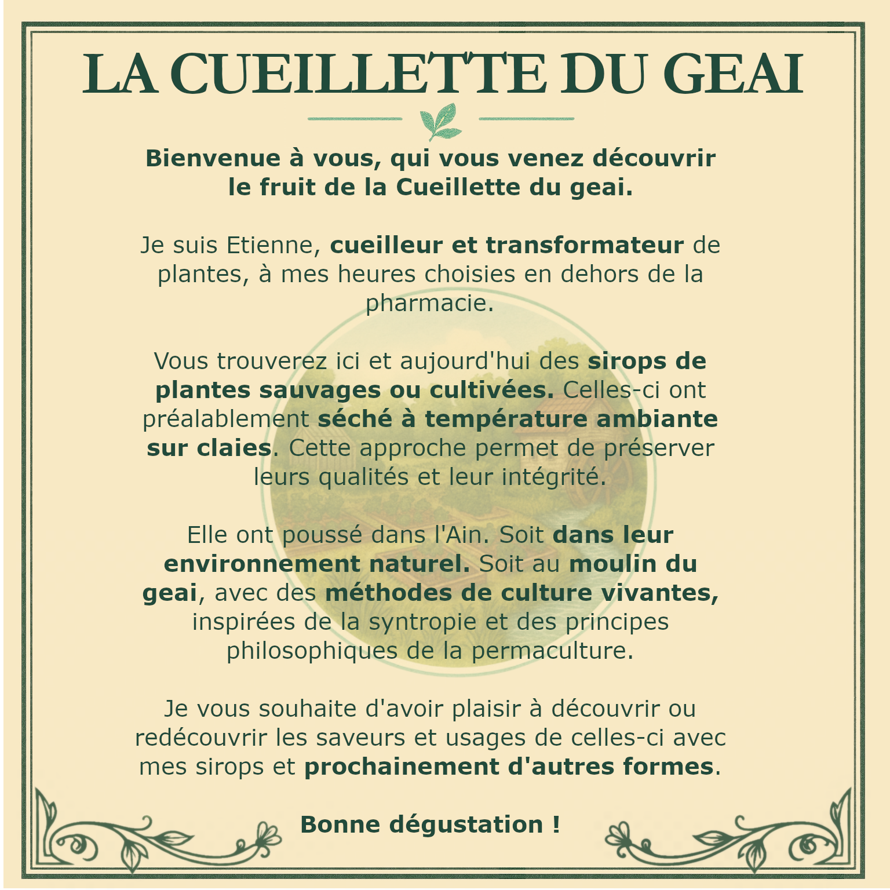

Activité agricole artisanale
Une maison végétale inspirée des anciennes étiquettes d'herboristerie, du geste paysan et d'une production à taille humaine.
Biziat, Ain · cueillette et transformation de plantes
La Cueillette du Geai élabore des tisanes et des sirops de plantes en petites séries, à partir de cueillettes locales et de cultures menées avec attention au sol, au séchage naturel et à l'expression fidèle des saveurs.

Activité agricole artisanale
Une maison végétale inspirée des anciennes étiquettes d'herboristerie, du geste paysan et d'une production à taille humaine.
Transformation de plantes
Chaque plante est choisie pour son caractère, son parfum et sa capacité à raconter un terroir, une saison et une manière de faire.
Production locale
Le site présente l'univers de la marque et oriente vers le contact direct et l'achat à l'adresse de production.
Produits
Deux familles de produits, préparées en petites quantités, avec une recherche d'équilibre, de naturel et de précision botanique.
Des assemblages et monoplantes où la feuille, la fleur et la tige gardent leur caractère. Le séchage naturel accompagne la finesse aromatique sans la brusquer.
Cueillies ou cultivées localement, puis travaillées avec simplicité.

Des sirops où la plante reste lisible, fraîche et expressive. Une transformation douce pour préserver le relief aromatique et la personnalité végétale.
Des recettes artisanales pensées pour rester franches, nettes et naturelles.

Valeurs
La production avance à l'échelle du lieu, avec des gestes sobres, un rapport direct aux plantes et une recherche de saveurs naturelles plutôt que d'effets artificiels.
Des plantes récoltées au plus près du territoire et de leur rythme naturel.
Un séchage respectueux pour conserver l'équilibre aromatique et la qualité botanique.
Une culture à petite échelle, attentive au sol vivant et aux cycles de la saison.
Des recettes qui laissent la plante parler avec clarté, sans surcharge ni artifice.
Univers végétal
Camomille, reine des prés, sureau, menthes, aubépine, ortie, guimauve, thym citron : une palette de plantes simples, familières et profondément vivantes.


Autres plantes

Contact
Le site n'est pas une boutique en ligne. Les produits peuvent être achetés sur place, à l'adresse de La Cueillette du Geai, ou après prise de contact.
Point de vente à l'adresse.